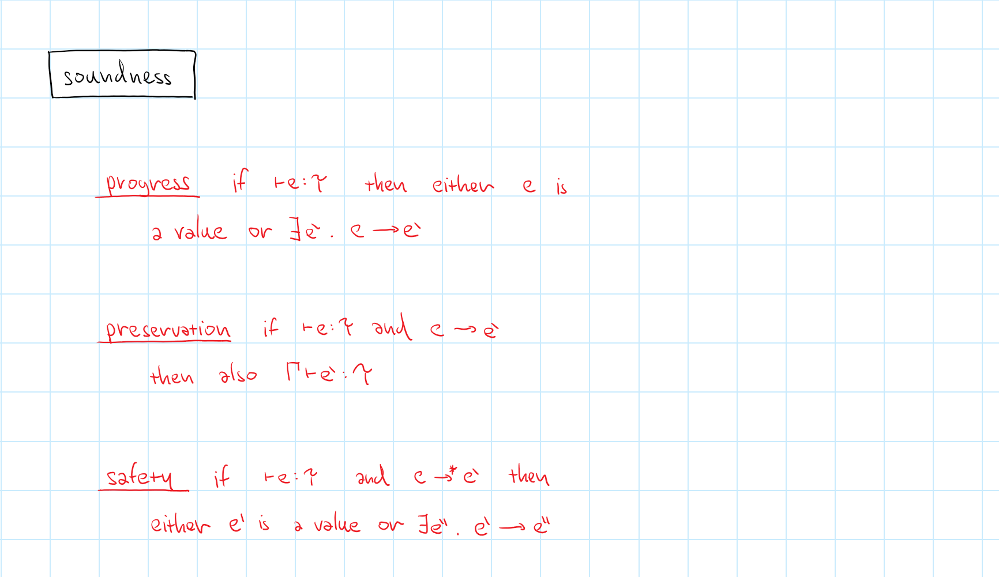
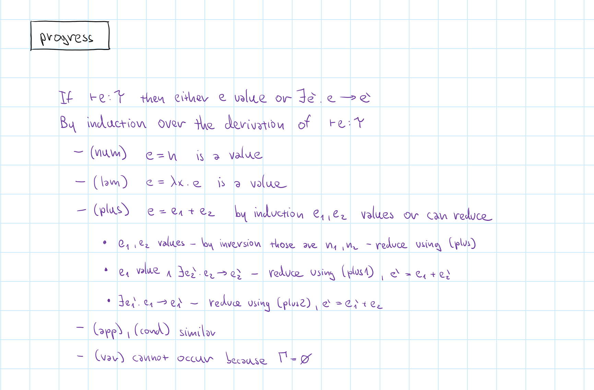
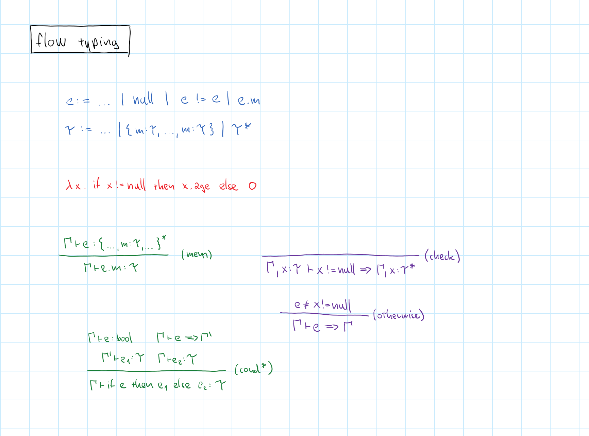

NPRG075
Mathematics and engineering of types
Tomáš Petříček, 309 (3rd floor)
petricek@d3s.mff.cuni.cz
https://tomasp.net | @tomaspetricek
Lectures: Monday 12:20, S7
https://d3s.mff.cuni.cz/teaching/nprg075

History
Where types come from?

Bertrand Russell
Use types (1900s) to resolve logical paradoxes
\(p(x)\) true if and only if \(\neg x(x)\) But \(p(p)\) if and only if \(\neg p(p)\)
Predicate \(p\) can be only applied to entities of lower type hence \(p(p)\) is invalid

IBM 704 FORTRAN
"Two types of variable are also permissible: fixed point and
floating point."
Called "modes" in more formal description!
Function arguments and results are in one of two modes.

COMTRAN, FLOW-MATIC and COBOL
Languages for business data processing
Built around working with data records
Algol language family

IAL 58 and Algol 60
- Adopts term "type" before publication
- Used just for primitive numeric types
- No explicit reference to Russell & logic
Algol 68, Pascal
- Attempts to make business-friendly language
- Add support for records and more
- Mathematical model of "types as sets"
Abstract data types
Clu and Ada in the 1970s
Type that can be used only through defined operations
Basis for abstraction, information hiding
and object-oriented programming
LCF / ML
Unifying ideas on types
- Meta-language for a theorem prover
- Abstract data types to represent theorems
- Type checking using methods of logic
- Records and unions for convenience
Types
Viewed by different cultures

History is messy!
Not just adopting
logic ideas into programming
Are we even talking about the same thing?
Think cultures of programming!
Cultures and types
Hacker
Types used for checking
how memory is used
Fixed and floating point,
but also data structures
Mathematical
Types used for proving program properties
Simply typed lambda calculus and safety proofs
Cultures and types
Engineering
Types to support good engineering practices
Information hiding, editor tooling and documentation
Management
Types as a mechanism
for team structuring
Division of labor, control programmer access rights
Cultural analysis
-
Abstract data types in Ada and Clu
Mix of engineering and managerial approaches -
Adding types to JS in TypeScript
Engineering approach, using mathematical ideas -
Type checking in ML, OCaml
Mathematical approach, using engineering ideas -
Types and ownership in Rust
Mix of hacker and mathematical approaches
Type systems
Mathematical look at types
Type systems
Mathematical look at types
- Types as a checking mechanism
- Rule out invalid programs
- Defined using a formal system
- Use induction to prove properties
Defining a type system

Typed lambda calculus

Type systems
Properties we may want
- Does it actually prevent bad behaviour?
- Can we check if a program has a given type?
- Can we automatically infer a type?
- Does the system assign just one type?
Properties, more formally

Proofs
Type safety
Type safety

What does it mean
- \(5 + (\lambda x.x)\) cannot be reduced!
- Stuck when no evaluation rule applies
- Well-typed programs do not get stuck
Progress + preservation
- Safety = progress + preservation
- Reduction preserves the type
- Well-typed expression is value or can be reduced
Type safety, formally

Proofs about types

What to expect
- Almost always by induction
- Easy with the right property
- Lots of uninspiring cases
Proofs by induction
- Over the (tree) syntax of the expression
- Over the (tree) typing derivation
- Over the (linear) sequence of reductions
Progress proof sketch

Preservation proof sketch

Fancy types
Interesting type systems
Fancy types
Interesting type systems
- Non-null, ownership & borrowing
- Effects, coeffects and communication
- Specific types for web, data, etc.
- Arbitrary computations in types!
Case study: TypeScript

Literal string types
- Concrete values can be types too!
- Useful paired with union types
- tinyurl.com/nprg075-lt
Design questions
- What was the motivation this?
- Is there another "better" approach?
- What are the benefits and drawbacks?
Billion dollar mistake

Tony Hoare invents null
I call it my billion-dollar mistake. It was
the invention of the null reference in 1965.
I couldn't resist the temptation to put it in
because it was so easy to implement.
Fixing null with types?
- Separate types that can be
null - Allow
obj.foo()on non-null types! - Null checks need special logic
Demo
Flow analysis in TypeScript
Sketch for non-null types

Conclusions
Mathematics & engineering of types

Designing types
Good language design case study!
Design inspired by logic, engineering concerns, existing real-world code
Mathematicians care for safety, engineering evaluation harder to do
Reading

Type providers
- Design of types for real-world data
- See: tomasp.net/academic/papers/ inforich/inforich-ddfp.pdf
Why read this
- Motivations beyond type safety
- Mechanism in F# and The Gamma
- Why don't all typed languages have this!?
Conclusions
Mathematics & engineering of types
- History of types is interesting & messy
- Different cultures think differently
- Type safety is basic formal PLT method!
Tomáš Petříček, 309 (3rd floor)
petricek@d3s.mff.cuni.cz
https://tomasp.net | @tomaspetricek
https://d3s.mff.cuni.cz/teaching/nprg075
References (1/2)
Theory and proofs
- Krishnaswami, N. (2021). Semantics of Programming Languages
- Pierce, B. (2002). Types and Programming Languages . MIT
Fancy types
- Pierce, B (ed.) (2004). Advanced Topics in Types and Programming Languages . MIT
- Honda, K. (2008). Multiparty Asynchronous Session Types. POPL
- TypeScript (2022). The TypeScript Handbook. Online
- Clarke, D. G. et al. (1998). Ownership types for flexible alias protection. OOPSLA
References (2/2)
History
- Martini, S. (2016). Several Types of Types in Programming Languages. HaPoC
- Kell, S. (2014). In Search of Types. Onward!
- Russell, B. (1903). The Principles of Mathematics. Cambridge
-
Hoare, C.A.R. (2009). Null References: The Billion Dollar
Mistake. InfoQ
Just for fun...